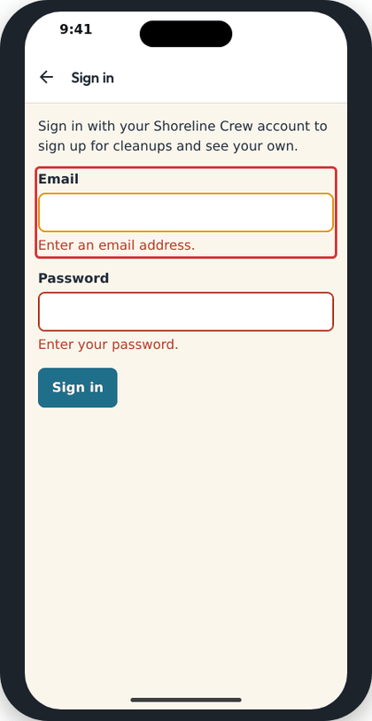
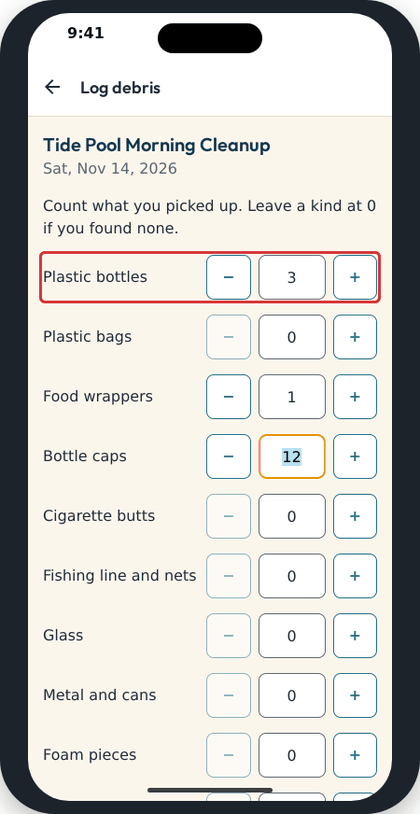
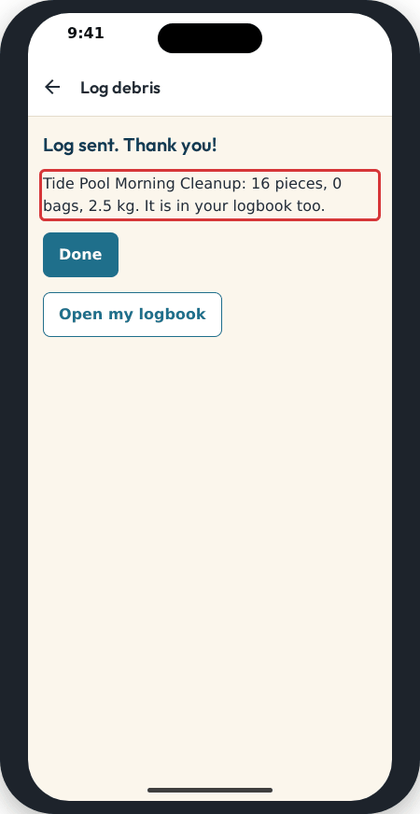

📝 Lesson 5.4: Mobile Forms
On a laptop, a form is a keyboard you already have and a mouse to jump between boxes. On a phone, the keyboard slides up over half the screen, changes shape for every field, and has one key in the corner that decides what happens next. Today you keep the form library you know, React Hook Form with Zod, and teach it the phone: the right keyboard for each field, a return key that walks the volunteer through the form, a screen that moves out of the keyboard's way, and a debris log a volunteer can fill in with one thumb on a windy beach.
🎯 Learning Objectives
By the end of this lesson, you will be able to:
- Connect React Hook Form to React Native text fields with
useControllerandController, and explain whyregisteris a web tool - Pick the keyboard for each field (
inputMode,autoComplete,secureTextEntry) and know which keys a phone's number pads leave out - Build a return-key focus chain with
enterKeyHint,submitBehavior,onSubmitEditingandsetFocus - Keep every field visible above the keyboard with
KeyboardAvoidingView, and say what differs on Android and iOS - Replace a keyboard with a stepper where a thumb does better, accessibly
- Validate a debris log with Zod on the phone and send it to the API with a device
clientId, in a shape Lesson 5.5 can queue
📦 Code for this lesson
Starting code: lesson-18-start.zip · Finished code: lesson-18-end.zip. Each folder has a README with the commands to run it.
In This Lesson
👋 Welcome: A Form for One Thumb
If you tried last lesson's "Before the Next Lesson" task, you noticed two things in other apps. The key at the bottom right of the keyboard changes its name (return, Next, Go, Search, Send), and in a good app the screen moves so the box you type in is never under the keyboard. Neither happens by itself in React Native. A web browser does both for an <input>; a phone app has to ask.
Shoreline Crew has one form so far, the sign-in from Lesson 4.3, built with useState and checked only by the server. Today it gets the treatment you gave the HQ's forms in the web course (Lesson 8.1 of the React + TypeScript course: React Hook Form, a Zod schema, messages under each field), and then the app gets its most important form: the debris log a volunteer fills in at the end of a cleanup, with sandy fingers, in the wind, maybe with one bar of signal.
By the end of today:
- Sign-in checks itself on the phone, offers the email keyboard, and walks from Email to Password to "signed in" with the return key.
- A Log debris modal opens from today's cleanup: a stepper for each kind of debris, bags, weight and a note, and a keyboard that never covers what you type.
- A log reaches shoreline-api with an id made on the phone, and lands in the logbook you built last lesson.
Why it matters for your work: forms are where mobile apps lose people. A field under the keyboard, an email box that capitalizes the first letter, a number box with letters on it: each one is a support ticket, a one-star review, or a volunteer who gives up and writes the numbers on paper. Teams notice developers who get these details right without being asked.
Why it matters for the volunteers: the debris log is the data the whole crew works for. Every count typed wrong or not typed at all is a hole in the season's report.
🌱 You know more of this than it looks
The schema, the resolver, handleSubmit, setError, mode: 'onTouched' and the HQ's wholeNumber rule all come across from the web course unchanged. What is new is the part between React Hook Form and the screen. When tsc or the linter complains today, and it will, it is pointing at exactly that seam: read the message for the word that does not exist on a phone.
🔌 React Hook Form Without an <input>
In the HQ, every field was <input {...register('title')} />. register returns a name, an onChange, an onBlur and a ref, and React Hook Form leans on the browser: it reads event.target.value when something changes, and the input element itself when it needs the current value or wants to focus it. A React Native TextInput is not an HTML input. Its change event has no target.value (the text arrives in onChangeText as a plain string), and its ref is a native view, not a DOM element.
React Hook Form has a second way in, built for exactly this, and you met its name in the web course's FAQ: Controller and its Hook form useController. Instead of the field reporting to the form, the form hands the field what it needs:
useController gives you | Goes to the TextInput as | Why |
|---|---|---|
field.value | value | The text the form holds for this field |
field.onChange | onChangeText | Called with the new text (a string, not an event) |
field.onBlur | onBlur | "The volunteer left the field": what mode: 'onTouched' waits for |
field.ref | ref | Lets React Hook Form call .focus(): the return-key chain and "go to the first problem" need it |
fieldState.error | the message under the field | This field's message from the schema (or from setError) |
Everything else is the web course: useForm({ resolver: zodResolver(schema), defaultValues, mode }), handleSubmit, formState, setError('root.server', …), z.input for what the fields hold and z.output for what a successful check gives back.
Shoreline Crew wraps this once, in a small component ControlledField: Lesson 4.3's FormField (label, text field, message) connected to a form by control and name. A form then reads almost like the HQ's:
<ControlledField control={control} name="email" label="Email" inputMode="email" />name is typed from the form's values (FieldPath), so name="emial" is a tsc error, just as in the web course.
💡 Mental model: the tally sheet and the crew leader
On the web, each volunteer (an <input>) keeps their own count on their own clipboard, and the crew leader (register) walks around and reads the clipboards when it is time to add up. On a phone, the volunteers have no clipboards. So the crew leader keeps one tally sheet (the form's values), and each volunteer calls out every change ("plus one bottle"): that is useController. The leader always knows the totals, and can point at anyone and say "you next" (the ref, for focus).
handleSubmit wants a web event
One more seam. On the web you wrote <form onSubmit={handleSubmit(save)}>. There is no <form> on a phone; the button's onPress and the return key's onSubmitEditing do the submitting. handleSubmit(save) returns a function typed to take a web form event, and React Native's press and keyboard events are different types, so passing it straight in is a tsc error (quoted in Common Mistakes; many older articles do it anyway). Make the function once and call it with no arguments:
const send = handleSubmit(submit);
// ...
<Button label="Sign in" onPress={() => send()} />⌨️ The Right Keyboard for Each Field
A phone draws a different keyboard for each field, and the field asks for it. Lesson 2.4 introduced the props; here is what each Shoreline Crew field asks for, and why:
| Field | Props | What the volunteer gets (per the React Native docs) |
|---|---|---|
inputMode="email", autoComplete="email", autoCapitalize="none", autoCorrect={false} | A keyboard with @ and .; the saved address offered above the keys; no capital first letter, no "corrections" to the address | |
| Password | secureTextEntry, autoComplete="current-password", autoCapitalize="none" | Dots instead of letters; the phone's password manager offers the saved password |
| A count (pieces, bags) | inputMode="numeric" | The number pad: digits only |
| Weight in kg | inputMode="decimal" | Digits and a decimal key, which is a comma on phones set to many languages (German, French, Spanish…) |
| A note | multiline, autoCapitalize="sentences", maxLength={500} | The full keyboard; return starts a new line; typing stops at the API's limit |
inputMode is the newer, web-style name; keyboardType ("email-address", "number-pad", "decimal-pad") is the older one you will see in most code. React Native 0.88 translates one into the other (read in its TextInput source: numeric becomes number-pad, decimal becomes decimal-pad), and the web preview turns inputMode into the HTML attribute of the same name (measured). The course uses inputMode, so today's sign-in moves from Lesson 4.3's keyboardType="email-address" to inputMode="email": the same keyboard.
Two things the number pads leave out
- The decimal point. If the phone is set to a language that writes 2,5 for two and a half, the decimal pad offers a comma. A schema that accepts only
2.5rejects what the phone's own keyboard typed. Shoreline Crew's weight rule turns a comma into a point before checking it. - The return key, on iPhone. According to React Native's documentation, the iOS number pad and decimal pad have no return key at all, so
enterKeyHintandonSubmitEditingnever fire there (Android's number keyboard does have one). Volunteers close it by tapping another field or by dragging the form, which is why Lesson 2.4'skeyboardDismissMode="on-drag"matters here. It is also one reason the counts get steppers below.
📱 On your phone
The web preview cannot show any of this: the computer's keyboard is the same for every field (it only adds the attributes, type="email", inputmode="decimal" and so on, measured). Step 10 checks each field on a phone. If your phone has a third-party keyboard app installed, it decides how faithfully it follows these hints.
↩️ The Return Key: Next, Next, Go
On a laptop, Tab moves to the next field. A phone keyboard has no Tab; it has the key in the bottom corner, and three props decide what it does:
| Prop | Says | Shoreline Crew |
|---|---|---|
enterKeyHint (older name returnKeyType) | The key's label: "next", "go", "done", "send", "search" | Next on every field but the last; Go on the password |
onSubmitEditing | What pressing it does | Move the focus to the next field, or submit |
submitBehavior | What the keyboard does: "blurAndSubmit" (close; the default for one-line fields), "submit" (stay open), "newline" (multiline default) | "submit" on fields that move on, so the keyboard does not drop and rise again between fields |
Moving the focus needs the next field's ref. That is the other reason ControlledField passes field.ref through: React Hook Form keeps every field's ref, so setFocus('password') finds the right TextInput by name, with no useRef per field:
<ControlledField
control={control}
name="email"
label="Email"
enterKeyHint="next" // the key says Next...
submitBehavior="submit" // ...the keyboard stays up...
onSubmitEditing={() => setFocus('password')} // ...and the password field gets the focus
/>The last field's key submits: enterKeyHint="go" and onSubmitEditing={() => send()}, the same function as the button.
The ref pays off a third time: when the schema finds problems, React Hook Form focuses the first field with a message (shouldFocusError, on by default). On the web it focused an <input>; with the TextInput's ref it does the same on a phone, which brings the keyboard up right where the volunteer needs to type. Measured in the web preview: Sign in with both boxes empty put the cursor in Email, under the message "Enter an email address."
A multiline note is the exception: its return key types a new line, so it never moves on or submits. That is why the debris log's note is the last field, followed by the Send button.
🌊 Out of the Keyboard's Way
The keyboard takes up to half the screen, and on iOS it is drawn over your app: whatever was in the bottom half is still there, just hidden. On Android, Expo SDK 58 apps are drawn edge to edge, and according to Expo's keyboard guide the window no longer shrinks for the keyboard by itself either. So on both platforms, a field near the bottom of a form can end up under the keys, and the volunteer types blind.
React Native's answer is KeyboardAvoidingView: a View that listens for the keyboard and makes room for it. With behavior="padding" it adds padding at its bottom as tall as the keyboard, so whatever is inside (Shoreline Crew's scroll view) now ends at the top of the keys and every field can be scrolled into sight.
| Setting | What Expo's keyboard guide says (SDK 58) |
|---|---|
behavior | Set one on both platforms: "padding" usually works best; with no behavior, a view can stay under the keyboard on Android |
keyboardVerticalOffset | When the view sits under a navigation header, pass the header's height (useHeaderHeight() from expo-router/react-navigation; it includes the status bar) |
Android softwareKeyboardLayoutMode: "pan" in app.json | Do not combine it with behavior="padding": the window pans and the view adds padding, so the field moves up twice |
react-native-keyboard-controller | The guide's recommendation for polished forms (KeyboardAwareScrollView scrolls to the focused field, KeyboardToolbar adds Next/Previous/Done), but it is not in Expo Go: it needs a development build |
Why the offset? KeyboardAvoidingView learns where the keyboard starts as a distance from the top of the window, but your screen starts below the header. Without the offset, it works out the overlap as if the screen started at the top, and the padding comes out short by the header's height, so the bottom field can still hide under the keys. With the offset it is right.
Shoreline Crew puts this in one component, FormScreen: KeyboardAvoidingView (padding, header offset) around a ScrollView with Lesson 3.1's useScreenScroll props, so taps on buttons still work while the keyboard is up (keyboardShouldPersistTaps="handled") and dragging the form puts the keyboard away (keyboardDismissMode="on-drag"). Both forms use it.
💡 Mental model: the tide line
Lesson 2.4 called the keyboard the tide coming in. KeyboardAvoidingView is the crew moving the gear bags up the beach as the water rises: the bags (your fields) are still all there, they just sit above the tide line, and the scroll view lets you walk along the line to any of them. The header offset is knowing that the beach starts at the dunes, not at the parking lot.
⚠️ What could be checked here, and what could not
The web preview has no on-screen keyboard, so KeyboardAvoidingView does nothing there (react-native-web's KeyboardAvoidingView is a plain View that ignores behavior and the offset: read in its source). The behavior above comes from Expo's and React Native's documentation; the course could not run it on a phone. Step 10 has you check it on yours, and Common Mistakes says what it looks like when it is wrong.
➕ A Stepper Instead of a Keyboard
A debris log has ten kinds of debris. Ten number boxes means ten trips to the number pad, and on iPhone a number pad with no return key. Most counts are small (three bottles, one net), and a thumb can tap a plus button faster than it can open a keyboard. So each count is a stepper: −, the number, +. Lesson 2.4's Going Further sketched one; today it is src/components/Stepper.tsx.
- The number is still a text field (
inputMode="numeric",selectTextOnFocusso typing replaces the 0). Some counts are big: nobody taps up to 230 cigarette butts. - The value stays text, like any field:
'3'. The buttons turn it into a number, add or take one, and hand back text. The schema'swholeNumberrule (the HQ's) checks it like a typed count, so "lots" typed into the box gets the API's message. - Each button is 48 tall (Lesson 2.4's
Button) and says what it does to a screen reader:accessibilityLabel="More: Plastic bottles", not "plus". The minus button is disabled at 0 and the plus at the maximum, and Button already reports disabled as a state. - It connects through
Controller, the component form ofuseController, with a render function: the form's loop over the ten categories renders ten Controllers with names likecounts.plastic-bottles, typed from the schema.
The ref goes to the number box, so when the schema rejects "lots" for Glass, React Hook Form focuses Glass's box (measured in the web preview, with one web-only twist that Step 9 explains).
💡 Why not a slider?
React Native has no slider in its core any more (Lesson 2.4: community packages), and a slider is the wrong control for a count: it is hard to land on exactly 7 with a thumb, and impossible to reach 230 on a short track. Steppers suit small, exact numbers; a text box suits big ones; this stepper is both.
📤 Checking and Sending a Debris Log
shoreline-api has taken debris logs from the phone since the HQ course was built: POST /api/events/:id/logs, for a signed-in volunteer with a spot (signed up or checked in) at a cleanup that has started. The body is the API's NewCleanupLog type, already in src/api/types.ts:
| Field | From | The API's rule (its message) |
|---|---|---|
items | The steppers: only kinds with a count above 0 | "Count must be a whole number from 0 to 100000." |
bags | A stepper | "Bags must be a whole number from 0 to 500." |
weightKg | A decimal box | "Weight must be a number of kilograms from 0 to 5000." |
note | A multiline box | "Keep the note to 500 characters or fewer." |
clientId | Made on the phone | 8 to 64 characters, unique per volunteer |
recordedAt | Made on the phone: when Send was pressed | An ISO timestamp |
The schema, debrisLogSchema in src/api/schemas.ts, uses the API's own messages (the HQ's habit), so the phone and the server never disagree. Its last step is a .transform that turns the form's shape (one text per category) into the API's (a list of the categories that were found). So z.input is what the fields hold and z.output is nearly a NewCleanupLog; toNewLog adds the two things only the phone can make.
The clientId: an id made on the phone
A phone on a beach sends a request, the signal drops, and the app never hears the answer. Did the log arrive? The app cannot know, so it sends again. If the server made the ids, it would now have two logs. Instead the phone makes the id, clientId, once per log, and shoreline-api recognizes a second copy: the first send answers 201 with the saved log, a resend with the same clientId answers 200 with the log it already has (the API's README calls this "never a duplicate"). That is what makes retries safe, and it is the base of Lesson 5.5.
The id comes from expo-crypto's randomUUID() (36 characters, made from the phone's secure random source; expo-crypto is in Expo Go). The form makes it once, when it opens (useState(() => randomUUID())): pressing Send twice, or again after a failure, sends the same log, not a new one.
What today sends, and what Lesson 5.5 adds
Today's sendLogMutation is an ordinary TanStack Query mutation, like Lesson 5.2's sign-up. Its variables are a LogToSend, { event, log }: the cleanup (for the logbook's title and date) and the finished NewCleanupLog. On success it saves the server's answer into the SQLite logbook with Lesson 5.3's saveSentLogs and invalidates ['logbook'], exactly the step 5.3 promised.
Offline, the mutation pauses (Lesson 5.2), the screen says "No connection: your log is sent when you are back online. Keep the app open until then.", and it is sent when the connection returns. "Keep the app open" is the honest part: a paused mutation lives in memory, and a force-quit loses it. Lesson 5.5 replaces that memory with a queue of LogToSend items saved on the phone, flushed when the connection comes back, safe to retry because of the clientId. Today's shapes are the ones it queues.
Who sees the form
Lesson 4.4 left a question open: what does a guest see who follows a link to the debris log? A Stack.Protected guard would send them to the Cleanups tab without a word, and after signing in they would have to find the cleanup again. So log/[id] is not guarded. It has faces, like My cleanups and the Logbook tab:
| Who | Sees (measured in the web preview) |
|---|---|
| A guest | "Sign in to log what you collected" and a Sign in button. The sign-in modal opens on top; signing in closes it, and the form is waiting underneath. |
| Signed in, no spot at this cleanup | "Only volunteers with a spot at this cleanup can log for it." (the API's words) and Go back |
| Signed in, the cleanup is still ahead | "This cleanup is on …. Log what you collected on the day." |
| Signed in, a spot, the day has come | The form |
The checks read the volunteer's own sign-ups (Lesson 5.2's mySignupsQuery, shared with My cleanups), so the screen knows before the volunteer types anything. The API checks the same rules again when the log arrives: the screen's checks are kindness, the server's are the rules ("the guard hides screens; the API protects data", Lesson 4.3).
The way in is a Log what you collected button on the cleanup screen, for a volunteer with a spot from the cleanup's day on. In the sample data, Theo is signed up for today's Tide Pool Morning Cleanup (e17).
⚠️ Common Mistakes
Each mistake below was made on purpose in a copy of the finished project and quoted as the tools showed it, unless it says it comes from the documentation.
⚠️ register on a TextInput
The web habit, <TextInput {...register('email')} />, is the quiet one: tsc and expo lint both print nothing, because the props register returns happen to fit a TextInput's types. Then the form does not work. Measured in the web preview with the email field written that way: typing a correct email and password and pressing Sign in sent no request and showed no message (the form still had no email to check, and a plain TextInput has nowhere to show the schema's answer). A phone fares no better: a TextInput's change event carries the text in nativeEvent.text, not in target.value where register looks (read in React Native's types and React Hook Form's source, not run on a phone). Use useController (here, ControlledField) or Controller for every React Native field.
⚠️ handleSubmit straight into onPress
onPress={handleSubmit(submit)} is what most articles (and the web course's onSubmit) suggest. With React Native 0.88's types, tsc rejects it, once for the button and once for the return key (trimmed: the type lines are very long):
Expected output
src/app/sign-in.tsx:77:9 - error TS2322: Type '(e?: BaseSyntheticEvent<object, any, any> | undefined) => Pr...
Types of parameters 'e' and 'e' are incompatible.
Type 'Readonly<{ bubbles: boolean | undefined; cancelable: boolean | undefined; currentTarget: number |...
Types of property 'bubbles' are incompatible.
Type 'boolean | undefined' is not assignable to type 'boolean'.
Type 'undefined' is not assignable to type 'boolean'.
77 onSubmitEditing={handleSubmit(submit)}
~~~~~~~~~~~~~~~
node_modules/react-native/types_generated/Libraries/Components/TextInput/TextInput.flow.d.ts:610:3
610 onSubmitEditing?: ((e: TextInputSubmitEditingEvent) => unknown) | undefined;
~~~~~~~~~~~~~~~
The expected type comes from property 'onSubmitEditing' which is declared here on type 'IntrinsicAttrib...
src/app/sign-in.tsx:83:9 - error TS2322: ...
...
83 onPress={handleSubmit(submit)}
~~~~~~~
...
Found 2 errors in the same file, starting at: src/app/sign-in.tsx:77Read it from the bottom of each block: the expected type comes from onSubmitEditing (a TextInput's submit event) and onPress (a press event), and React Hook Form's function wants a web event whose bubbles is always a boolean. The fix is const send = handleSubmit(submit) and () => send(): the function is called with no event at all, which it accepts.
⚠️ Reading field.something during render
A first version of ControlledField wrote ref={field.ref}, value={field.value} and so on, as most examples do. tsc was happy; npx expo lint was not (trimmed):
Expected output
~/shoreline/shoreline-crew/src/components/ControlledField.tsx
27:12 error Error: Cannot access refs during render
React refs are values that are not needed for rendering. Refs should only be accessed outside of rend...
~/shoreline/shoreline-crew/src/components/ControlledField.tsx:27:12
25 | <FormField
26 | {...props}
> 27 | ref={field.ref}
| ^^^^^^^^^ Cannot access ref value during render
28 | value={field.value}
29 | onChangeText={field.onChange}
...
✖ 4 problems (4 errors, 0 warnings)The React Compiler's lint rules (on in the Expo template) see an object that holds a ref and treat every read from it as reading a ref during render, which would be a real bug if field were a ref. It is not, but the fix costs nothing: take field apart where you get it, const { field: { ref, value, onChange, onBlur } } = useController(…), and use the plain names. The Controllers in the log form do the same in their render functions.
⚠️ A KeyboardAvoidingView that does not avoid (from the documentation)
Two forms of the same mistake, described in Expo's keyboard guide and React Native's documentation (the course could not run them on a phone): no behavior, and on Android the keyboard still covers the lower fields, because edge-to-edge apps do not shrink for the keyboard; or no keyboardVerticalOffset under a header, and the bottom field stays partly hidden by about the header's height. The opposite also happens: behavior="padding" together with softwareKeyboardLayoutMode: "pan" in app.json moves the field up twice, leaving a gap. If a field hides on your phone in Step 10, check these three first.
⚠️ A new clientId on every press
Making the id inside the submit function (clientId: randomUUID() right before sending) type-checks and works on a good connection. On a bad one, the first press reaches the server but the answer is lost, the volunteer presses again, and the second request carries a different id: shoreline-api has no way to know it is the same log, and the season's totals count those bottles twice. Measured with the API: the same clientId twice answered 201 and then 200 with the same saved log. Make the id once per log (Shoreline Crew: when the form opens).
⚠️ Trusting the decimal point
A weight rule of /^\d+(\.\d+)?$/ alone rejects 2,5, which is exactly what the decimal pad types on a phone set to German, French or Spanish. The volunteer did nothing wrong and cannot fix it from that keyboard. Accept what the phone's keyboard can type (Shoreline Crew's schema turns a comma into a point first), and test once with your phone's language changed if you can.
🛠️ Project: Sign-In and the Debris Log
You install the form libraries, write the two schemas, connect FormField to React Hook Form, build a keyboard-aware screen, rebuild sign-in with a return-key chain, then build the stepper, the send, and the Log debris modal with its way in. Work in shoreline-crew, with shoreline-api running in a second terminal (with --host when you test on your phone, as in Lesson 5.1).
Step 1: Install the form libraries (5 min)
Stop Metro with Ctrl+C (also Ctrl+C on a Mac). The same three libraries as the HQ, plus expo-crypto for the log's id, with Expo's installer:
npx expo install react-hook-form zod @hookform/resolvers expo-cryptoExpected output
› Installing 1 SDK 58.0.0 compatible native module and 3 other packages using npm
> npm install --save react-hook-form zod @hookform/resolvers
added 8 packages, removed 2 packages, and audited 810 packages in 5s
167 packages are looking for funding
run `npm fund` for details
8 moderate severity vulnerabilities
To address issues that do not require attention, run:
npm audit fix
To address all issues (including breaking changes), run:
npm audit fix --force
Run `npm audit` for details."1 SDK 58.0.0 compatible native module" is expo-crypto (in Expo Go, no development build); the "3 other packages" are plain JavaScript, so Expo passes them to npm unchanged, and you get the HQ's versions (react-hook-form ^7.92.0, zod ^4.6.7, @hookform/resolvers ^7.0.6). The vulnerabilities line is npm's audit of the whole project, as in earlier lessons: the install worked.
Step 2: The schemas (15 min)
First the debris categories and their names. If you did the web course, this is the HQ's src/utils/debris.ts in this project's style (semicolons, @/ imports); create src/utils/debris.ts:
// The API's debris categories and the app's words for them (copied from the HQ's utils/debris.ts,
// in this project's style). GET /api/meta lists the same ones.
import type { DebrisCategory } from '@/api/types';
/** Every category, in the API's order */
export const debrisCategories: DebrisCategory[] = [
'plastic-bottles',
'plastic-bags',
'food-wrappers',
'bottle-caps',
'cigarette-butts',
'fishing-gear',
'glass',
'metal',
'foam',
'other',
];
/** What the app calls each category */
export const debrisLabels: Record<DebrisCategory, string> = {
'plastic-bottles': 'Plastic bottles',
'plastic-bags': 'Plastic bags',
'food-wrappers': 'Food wrappers',
'bottle-caps': 'Bottle caps',
'cigarette-butts': 'Cigarette butts',
'fishing-gear': 'Fishing line and nets',
glass: 'Glass',
metal: 'Metal and cans',
foam: 'Foam pieces',
other: 'Other',
};Then the schemas, in a new src/api/schemas.ts:
// Shoreline Crew's Zod schemas (new, in the HQ's style): each one is a form's type AND its checks.
// The messages are shoreline-api's own, so the phone and the server say the same thing.
import { z } from 'zod';
import type { CleanupEvent, NewCleanupLog } from '@/api/types';
import { debrisCategories } from '@/utils/debris';
// ---------------------------------------------------------------- sign in
export const signInSchema = z.object({
// Trimmed first: a phone keyboard's autocorrect likes to add a space after an address
email: z.string().trim().pipe(z.email('Enter an email address.')),
password: z.string().min(1, 'Enter your password.'),
});
/** What the sign-in form holds and sends (the same: two strings) */
export type SignInValues = z.input<typeof signInSchema>;
export type SignInData = z.output<typeof signInSchema>;
// ---------------------------------------------------------------- a debris log
// A count typed into a box: digits only, so an empty box is a message, not a silent 0
// (the HQ's wholeNumber from Lesson 8.2 of the web course)
function wholeNumber(max: number, message: string) {
return z
.string()
.trim()
.regex(/^\d+$/, message)
.transform(Number)
.refine((count) => count <= max, message);
}
const weightRule = 'Weight must be a number of kilograms from 0 to 5000.';
export const debrisLogSchema = z
.object({
// One box per kind of debris: { 'plastic-bottles': '12', glass: '0', ... }
counts: z.record(
z.enum(debrisCategories),
wholeNumber(100_000, 'Count must be a whole number from 0 to 100000.'),
),
bags: wholeNumber(500, 'Bags must be a whole number from 0 to 500.'),
weightKg: z
.string()
.trim()
// Many phones set to other languages offer a comma as the decimal key: 2,5 means 2.5
.transform((typed) => typed.replace(',', '.'))
.pipe(z.string().regex(/^\d+(\.\d+)?$/, weightRule))
.transform(Number)
.refine((kg) => kg <= 5000, weightRule),
note: z.string().trim().max(500, 'Keep the note to 500 characters or fewer.'),
})
// What the API wants: only the kinds of debris that were found, as a list
.transform(({ counts, ...rest }) => ({
...rest,
items: debrisCategories
.map((category) => ({ category, count: counts[category] }))
.filter((item) => item.count > 0),
}));
/** What the log form's fields hold: text, as typed */
export type DebrisLogValues = z.input<typeof debrisLogSchema>;
/** What a successful check gives back: numbers and a list, ready to send */
export type DebrisLogData = z.output<typeof debrisLogSchema>;
/** A log ready to go: everything POST /api/events/:id/logs needs, plus its cleanup for the logbook.
* Lesson 5.5 keeps exactly this in the offline queue. */
export type LogToSend = { event: CleanupEvent; log: NewCleanupLog };
/** The form's answer as the API's NewCleanupLog. clientId and recordedAt are made on the phone:
* the id once per log (a resend is then recognized), the time when the volunteer pressed Send. */
export function toNewLog(data: DebrisLogData, clientId: string, recordedAt: Date): NewCleanupLog {
return { clientId, recordedAt: recordedAt.toISOString(), ...data };
}signInSchema: the API's two messages, so the phone says exactly what the server would.z.email()is Zod 4's email check, after a trim.countsis az.recordkeyed byz.enum(debrisCategories): in Zod 4 that means every category must be there, so the form's values type has all ten keys, and a field name likecounts.glasstype-checks whilecounts.glasdoes not.wholeNumberis the HQ's from the web course's Lesson 8.2 (digits only, so an empty box is a message, not a silent 0). The weight rule adds the comma step from The Right Keyboard.- The final
.transformruns only when every field passed, and returns the API's shape:itemslists only what was found. LogToSendandtoNewLogare the hand-off to the API (and to Lesson 5.5's queue).
Step 3: FormField takes a ref, and ControlledField (10 min)
Lesson 4.3's FormField needs one new prop: a ref it passes to its TextInput, so whoever owns the field can focus it. In React 19 a ref is an ordinary prop of a function component (no forwardRef, as in the web course). Its type is React Native's TextInputInstance:
-import { StyleSheet, TextInput, type TextInputProps, View } from 'react-native';
+import type { Ref } from 'react';
+import {
+ StyleSheet,
+ TextInput,
+ type TextInputInstance,
+ type TextInputProps,
+ View,
+} from 'react-native';
// ...
error?: string;
+ // The text field itself, for whoever needs to move the focus to it (React 19: ref is a prop)
+ ref?: Ref<TextInputInstance>;
};
// ...
// A labeled text field, with the reason it needs fixing underneath when there is one
-export function FormField({ label, error, ...input }: FormFieldProps) {
+export function FormField({ label, error, ref, ...input }: FormFieldProps) {
const { colors } = useTheme();
// ...
<TextInput
+ ref={ref}
accessibilityLabel={label}Then the connection to React Hook Form, in a new src/components/ControlledField.tsx:
import type { ComponentProps } from 'react';
import { type Control, type FieldPath, type FieldValues, useController } from 'react-hook-form';
import { FormField } from '@/components/FormField';
// FormField's props, minus the ones React Hook Form now provides. T is what the fields hold;
// Out is what the form gives back after the schema's checks (numbers instead of text, ...).
type ControlledFieldProps<T extends FieldValues, Out> = Omit<
ComponentProps<typeof FormField>,
'value' | 'onChangeText' | 'onBlur' | 'error' | 'ref'
> & {
control: Control<T, unknown, Out>;
name: FieldPath<T>;
};
// A FormField that belongs to a React Hook Form form. A phone has no HTML input for register()
// to find, so useController hands over the value, the change and blur handlers, the field's
// message, and a ref: with it, setFocus('password') and "focus the first field with a problem"
// work.
export function ControlledField<T extends FieldValues, Out = T>({
control,
name,
...props
}: ControlledFieldProps<T, Out>) {
// Taken apart at once: the lint rules treat an object with a ref inside as a ref
const {
field: { ref, value, onChange, onBlur },
fieldState: { error },
} = useController({ control, name });
return (
<FormField
{...props}
ref={ref}
value={value}
onChangeText={onChange}
onBlur={onBlur}
error={error?.message}
/>
);
}It is generic in two types, like the form it belongs to: T, what the fields hold, which makes name a checked FieldPath<T>, and Out, what the schema gives back. React Hook Form's Control carries both, and a schema with transforms (both of today's) makes them different. Everything else passes through to FormField, so inputMode, enterKeyHint and the rest are written where the field is used.
Step 4: A screen that makes room for the keyboard (5 min)
Create src/components/FormScreen.tsx, the keyboard-aware sibling of <Screen scroll>:
import { useHeaderHeight } from 'expo-router/react-navigation';
import type { ReactNode } from 'react';
import { KeyboardAvoidingView, ScrollView, StyleSheet } from 'react-native';
import type { Edge } from 'react-native-safe-area-context';
import { useScreenScroll } from '@/components/Screen';
type FormScreenProps = {
children: ReactNode;
edges?: readonly Edge[];
};
// A screen with a form on it: it scrolls like <Screen scroll>, and it gets out of the keyboard's way.
// When the keyboard comes up, KeyboardAvoidingView adds padding at the bottom as tall as the
// keyboard, so the scroll view ends above it and every field can be scrolled into sight.
export function FormScreen({ children, edges = ['bottom', 'left', 'right'] }: FormScreenProps) {
const screen = useScreenScroll(edges);
// The keyboard is measured from the top of the window, the screen starts under the header
const headerHeight = useHeaderHeight();
return (
<KeyboardAvoidingView
// padding on both: iOS lays the keyboard over the app, and Expo apps on Android are
// edge-to-edge, so the window no longer shrinks for the keyboard by itself
behavior="padding"
keyboardVerticalOffset={headerHeight}
style={styles.fill}
>
<ScrollView {...screen}>{children}</ScrollView>
</KeyboardAvoidingView>
);
}
const styles = StyleSheet.create({
fill: {
flex: 1,
},
});It reuses useScreenScroll from Lesson 3.1 (the page color, padding, safe-area edges and the two keyboard props), and its default edges suit a screen under a header, which both forms are. useHeaderHeight comes from expo-router/react-navigation, Expo Router's copy of React Navigation's helpers.
Step 5: Sign-in with React Hook Form and a return-key chain (15 min)
Replace src/app/sign-in.tsx. The flow from Lesson 4.3 stays (close the modal, then set the session); the four useStates become one useForm:
import { zodResolver } from '@hookform/resolvers/zod';
import { router } from 'expo-router';
import { useForm } from 'react-hook-form';
import { ApiError, describeError, postSignIn, setSession } from '@/api/client';
import { type SignInData, signInSchema } from '@/api/schemas';
import { AppText } from '@/components/AppText';
import { Button } from '@/components/Button';
import { ControlledField } from '@/components/ControlledField';
import { FormScreen } from '@/components/FormScreen';
// The sign-in modal. It exists only while nobody is signed in (Stack.Protected in _layout.tsx).
export default function SignInScreen() {
const {
control,
handleSubmit,
setFocus,
setError,
resetField,
formState: { errors, isSubmitting },
} = useForm({
resolver: zodResolver(signInSchema),
defaultValues: { email: '', password: '' },
// Check a field when the volunteer leaves it, then again as they fix it (as in the HQ)
mode: 'onTouched',
});
// handleSubmit calls this only when the schema found nothing to fix
async function submit(credentials: SignInData) {
try {
const session = await postSignIn(credentials);
// Close the modal first, back to the screen that opened it. Then switch to signed in: the
// guard takes this screen away at once, and if it were still open, you would land on the
// first tab instead.
if (router.canGoBack()) {
router.back();
}
setSession(session);
} catch (error) {
resetField('password'); // never keep a password around after a try that did not work
// 400: fields to fix; 401: wrong email or password. The API's own words fit both.
const known = error instanceof ApiError && (error.status === 400 || error.status === 401);
setError('root.server', { message: known ? error.message : describeError(error) });
}
}
// Check, then submit. Called with no arguments: React Hook Form's handleSubmit expects a web
// form event, and a phone's press and return key send different events
const send = handleSubmit(submit);
return (
<FormScreen>
<AppText>
Sign in with your Shoreline Crew account to sign up for cleanups and see your own.
</AppText>
{errors.root?.server !== undefined && (
<AppText variant="error" accessibilityRole="alert">
{errors.root.server.message}
</AppText>
)}
<ControlledField
control={control}
name="email"
label="Email"
inputMode="email" // the keyboard with @ and .
autoComplete="email"
autoCapitalize="none"
autoCorrect={false}
enterKeyHint="next" // the return key says Next...
submitBehavior="submit" // ...keeps the keyboard up...
onSubmitEditing={() => setFocus('password')} // ...and moves to the password
/>
<ControlledField
control={control}
name="password"
label="Password"
secureTextEntry // dots instead of letters
autoComplete="current-password" // password managers offer the saved one
autoCapitalize="none"
enterKeyHint="go" // the last field: the return key signs in
onSubmitEditing={() => send()}
/>
<Button
label={isSubmitting ? 'Signing in…' : 'Sign in'}
variant="primary"
disabled={isSubmitting}
onPress={() => send()}
/>
</FormScreen>
);
}- The server's answers go into
setError('root.server', …), the web course's pattern, shown in the alert line. The API's per-field messages for a 400 are no longer needed: the schema checks the same rules before anything is sent. resetField('password')empties the password after a failed try, as Lesson 4.3'ssetPassword('')did.isSubmittingreplaces thesendingstate: React Hook Form keeps it true while the asyncsubmitruns.
In the web preview, press Sign in with both boxes empty: both messages appear, the cursor is in Email, and the API's terminal shows no request (measured). Type the email and press Enter: the cursor moves to Password (the web preview's Enter is the phone's return key; measured). Type shoreline-demo and press Enter again: you are signed in.

Step 6: The stepper (10 min)
Create src/components/Stepper.tsx:
import type { Ref } from 'react';
import { StyleSheet, TextInput, type TextInputInstance, View } from 'react-native';
import { AppText } from '@/components/AppText';
import { Button } from '@/components/Button';
import { createThemedStyles, useTheme } from '@/hooks/useTheme';
import { radius, spacing } from '@/theme/spacing';
type StepperProps = {
label: string;
// The count as text, like any text field: what the volunteer typed, or what the buttons made
value: string;
onChange: (value: string) => void;
onBlur?: () => void;
max: number;
error?: string;
ref?: Ref<TextInputInstance>;
};
// A count you change with a thumb: minus, the number, plus. The number is a text field too,
// for counts too big to tap up to (230 cigarette butts).
export function Stepper({ label, value, onChange, onBlur, max, error, ref }: StepperProps) {
const { colors } = useTheme();
const styles = useStyles();
// Whatever is in the box, as a number to step from (0 when it is not a whole number yet)
const count = /^\d+$/.test(value.trim()) ? Number(value.trim()) : 0;
return (
<View style={styles.stepper}>
<View style={styles.row}>
<AppText style={styles.label}>{label}</AppText>
<Button
label="−"
accessibilityLabel={`Fewer: ${label}`}
disabled={count === 0}
onPress={() => onChange(String(count - 1))}
/>
<TextInput
ref={ref}
value={value}
onChangeText={onChange}
onBlur={onBlur}
accessibilityLabel={label}
inputMode="numeric" // digits only: the number pad
selectTextOnFocus // typing replaces the 0 instead of adding to it
maxLength={6}
style={[styles.input, error !== undefined && styles.invalid]}
placeholderTextColor={colors.textMuted}
/>
<Button
label="+"
accessibilityLabel={`More: ${label}`}
disabled={count >= max}
onPress={() => onChange(String(count + 1))}
/>
</View>
{error !== undefined && (
<AppText variant="error" accessibilityLiveRegion="polite">
{error}
</AppText>
)}
</View>
);
}
const useStyles = createThemedStyles(({ colors }) => StyleSheet.create({
stepper: {
gap: spacing.xs,
},
row: {
flexDirection: 'row',
alignItems: 'center',
gap: spacing.sm,
},
label: {
flex: 1, // the words take what is left, and wrap if they must
},
input: {
width: 72,
minHeight: 48,
borderWidth: 1,
borderColor: colors.inputBorder,
borderRadius: radius.control,
backgroundColor: colors.surface,
color: colors.text,
fontSize: 16,
textAlign: 'center',
},
invalid: {
borderColor: colors.error,
borderWidth: 2,
},
}));It knows nothing about forms: a label, a text value, onChange, a maximum. That keeps it reusable (any count, such as your own app's quantities) and easy to test. The minus label is the real minus sign −, which a screen reader would read oddly on its own; the accessibilityLabel says "Fewer: Glass" instead.
Step 7: Send a log (10 min)
In src/api/client.ts, import one more type and add the request at the end, next to the other sign-up and log functions:
EventStatus,
+ NewCleanupLog,
PageInfo,
// ...
}
+
+/** POST /api/events/:id/logs: send a debris log. The API answers 201 with the saved log, or 200
+ * with the one it already has when the same clientId comes again (a resend, never a duplicate). */
+export function postLog(eventId: string, log: NewCleanupLog): Promise<CleanupLog> {
+ return sendJSON('POST', `/events/${encodeURIComponent(eventId)}/logs`, log, isCleanupLog);
+}isCleanupLog is Lesson 5.3's check, now used for a second answer. Then the mutation, in src/api/mutations.ts:
-import { cancelSignup, getEventLogs, postSignup } from '@/api/client';
+import { cancelSignup, getEventLogs, postLog, postSignup } from '@/api/client';
import { mySignupsQuery, queryClient } from '@/api/queries';
+import type { LogToSend } from '@/api/schemas';
import { saveSentLogs } from '@/storage/logbook';
// ...
}
+
+/**
+ * Send a debris log from the form (Lesson 5.4), then keep a copy in the logbook on this phone.
+ * Offline it waits, like every mutation, but only in memory: Lesson 5.5 makes the wait survive
+ * closing the app, with a queue of LogToSend items.
+ */
+export function sendLogMutation() {
+ return mutationOptions({
+ mutationFn: ({ event, log }: LogToSend) => postLog(event.id, log),
+ // The server's answer (the saved log) goes into the logbook with its cleanup
+ onSuccess: async (saved, { event }) => {
+ await saveSentLogs([{ log: saved, event }]);
+ await queryClient.invalidateQueries({ queryKey: ['logbook'] });
+ },
+ });
+}onSuccess receives the server's answer (saved, with the id the API gave it) and the variables ({ event }). It saves the server's copy, not the form's, so the logbook holds exactly what shoreline-api has, and returning the promise keeps the mutation pending until the logbook is written.
Step 8: The Log debris modal (20 min)
Create the folder src/app/log and, in it, [id].tsx. Read it in four parts: the guest face, the spot check, the form, the answer.
import { zodResolver } from '@hookform/resolvers/zod';
import { useMutation, useQuery } from '@tanstack/react-query';
import { randomUUID } from 'expo-crypto';
import { Link, router, useLocalSearchParams } from 'expo-router';
import { useState } from 'react';
import { Controller, useForm } from 'react-hook-form';
import { StyleSheet, View } from 'react-native';
import { ApiError, describeError } from '@/api/client';
import { sendLogMutation } from '@/api/mutations';
import { mySignupsQuery, viewerId } from '@/api/queries';
import { type DebrisLogValues, debrisLogSchema, toNewLog } from '@/api/schemas';
import type { CleanupEvent, CleanupLog } from '@/api/types';
import { AppText } from '@/components/AppText';
import { Button } from '@/components/Button';
import { ControlledField } from '@/components/ControlledField';
import { EmptyState } from '@/components/EmptyState';
import { ErrorView } from '@/components/ErrorView';
import { FormScreen } from '@/components/FormScreen';
import { LoadingView } from '@/components/LoadingView';
import { Screen } from '@/components/Screen';
import { Stepper } from '@/components/Stepper';
import { useSession } from '@/hooks/useSession';
import { spacing } from '@/theme/spacing';
import { debrisCategories, debrisLabels } from '@/utils/debris';
import { formatDate, toDateString } from '@/utils/format';
// Back to wherever the log was opened from (or to the Cleanups tab after a link)
function leave() {
if (router.canGoBack()) {
router.back();
} else {
router.replace('/');
}
}
// A new debris log for the cleanup with this id: /log/e17 (a modal over the cleanup's screen)
export default function LogScreen() {
const { id } = useLocalSearchParams<'/log/[id]'>();
const session = useSession();
// Open to everyone, so a link always lands here: a guest signs in on top of this screen,
// and the form is waiting underneath when the sign-in closes
if (session === null) {
return (
<Screen scroll edges={['bottom', 'left', 'right']}>
<AppText variant="heading" accessibilityRole="header">
Sign in to log what you collected
</AppText>
<AppText>Debris logs are for volunteers with a spot at the cleanup.</AppText>
<Link href="/sign-in" asChild>
<Button label="Sign in" variant="primary" />
</Link>
</Screen>
);
}
return <LogForCleanup id={id} viewer={viewerId(session)} />;
}
// Signed in: is this your cleanup, and has it happened? Your sign-ups know both.
function LogForCleanup({ id, viewer }: { id: string; viewer: string }) {
const signups = useQuery(mySignupsQuery(viewer));
if (signups.data === undefined) {
return (
<Screen scroll edges={['bottom', 'left', 'right']}>
{signups.isError ? (
<ErrorView message={describeError(signups.error)} onRetry={() => signups.refetch()} />
) : (
<LoadingView label="Checking your sign-ups…" />
)}
</Screen>
);
}
// A spot at this cleanup: signed up, or already checked in (the API's own rule)
const held = signups.data.find(
({ eventId, status }) => eventId === id && (status === 'confirmed' || status === 'attended'),
);
const message =
held === undefined
? 'Only volunteers with a spot at this cleanup can log for it.'
: held.event.date > toDateString(new Date())
? `This cleanup is on ${formatDate(held.event.date)}. Log what you collected on the day.`
: null;
if (held === undefined || message !== null) {
return (
<Screen scroll edges={['bottom', 'left', 'right']}>
<EmptyState message={message ?? ''} action={{ label: 'Go back', onPress: leave }} />
</Screen>
);
}
return <DebrisLogForm event={held.event} />;
}
// Every kind of debris starts at 0, as text: the fields hold what the volunteer sees
const emptyLog: DebrisLogValues = {
counts: Object.fromEntries(debrisCategories.map((category) => [category, '0'])) as Record<
(typeof debrisCategories)[number],
string
>,
bags: '0',
weightKg: '',
note: '',
};
function DebrisLogForm({ event }: { event: CleanupEvent }) {
// One id per log, made on the phone the moment the form opens: if the same log is sent twice
// (a retry after a lost answer), the API recognizes it and keeps one
const [clientId] = useState(() => randomUUID());
const sendLog = useMutation(sendLogMutation());
const {
control,
handleSubmit,
setFocus,
formState: { errors },
} = useForm({
resolver: zodResolver(debrisLogSchema),
defaultValues: emptyLog,
mode: 'onTouched',
});
// Checked by the schema first; the time is when Send was pressed, not when the form opened
const send = handleSubmit((data) =>
sendLog.mutate({ event, log: toNewLog(data, clientId, new Date()) }),
);
if (sendLog.isSuccess) {
return <LogSent event={event} log={sendLog.data} />;
}
// The server's "no" in its own words (403 no spot, 409 not yet, 400 fields), else the usual text
const error = sendLog.error;
const problem =
error === null
? null
: error instanceof ApiError && error.status >= 400 && error.status < 500 && error.status !== 401
? error.message
: describeError(error);
return (
<FormScreen>
<View>
<AppText variant="heading" accessibilityRole="header">
{event.title}
</AppText>
<AppText variant="muted">{formatDate(event.date)}</AppText>
</View>
<AppText>Count what you picked up. Leave a kind at 0 if you found none.</AppText>
<View style={styles.group}>
{debrisCategories.map((category) => (
<Controller
key={category}
control={control}
name={`counts.${category}`}
render={({ field: { ref, value, onChange, onBlur }, fieldState }) => (
<Stepper
ref={ref}
label={debrisLabels[category]}
value={value}
onChange={onChange}
onBlur={onBlur}
max={100_000}
error={fieldState.error?.message}
/>
)}
/>
))}
</View>
<Controller
control={control}
name="bags"
render={({ field: { ref, value, onChange, onBlur }, fieldState }) => (
<Stepper
ref={ref}
label="Bags filled"
value={value}
onChange={onChange}
onBlur={onBlur}
max={500}
error={fieldState.error?.message}
/>
)}
/>
<ControlledField
control={control}
name="weightKg"
label="Weight (kg)"
placeholder="For example 2.5"
inputMode="decimal" // numbers and a decimal point (or comma)
enterKeyHint="next"
submitBehavior="submit"
onSubmitEditing={() => setFocus('note')}
/>
<ControlledField
control={control}
name="note"
label="Note (optional)"
multiline // the return key starts a new line here
maxLength={500}
autoCapitalize="sentences"
/>
{errors.root !== undefined && (
<AppText variant="error" accessibilityRole="alert">
{errors.root.message}
</AppText>
)}
{sendLog.isPaused && (
<AppText variant="muted" accessibilityLiveRegion="polite">
No connection: your log is sent when you are back online. Keep the app open until then.
</AppText>
)}
{problem !== null && (
<AppText variant="error" accessibilityRole="alert">
Not sent. {problem}
</AppText>
)}
<Button
label={sendLog.isPending ? 'Sending…' : 'Send the log'}
variant="primary"
disabled={sendLog.isPending}
onPress={() => send()}
/>
</FormScreen>
);
}
// After a 201 (or a 200 for a resend): what the server saved, and where to see it
function LogSent({ event, log }: { event: CleanupEvent; log: CleanupLog }) {
const pieces = log.items.reduce((sum, item) => sum + item.count, 0);
return (
<Screen scroll edges={['bottom', 'left', 'right']}>
<AppText variant="heading" accessibilityRole="header">
Log sent. Thank you!
</AppText>
<AppText accessibilityLiveRegion="polite">
{event.title}: {pieces} {pieces === 1 ? 'piece' : 'pieces'}, {log.bags}{' '}
{log.bags === 1 ? 'bag' : 'bags'}, {log.weightKg} kg. It is in your logbook too.
</AppText>
<Button label="Done" variant="primary" onPress={leave} />
<Link href="/logbook" dismissTo asChild>
<Button label="Open my logbook" />
</Link>
</Screen>
);
}
const styles = StyleSheet.create({
group: {
gap: spacing.md,
},
});- Three components, on purpose (Lesson 5.3's lesson about MyLogbook): signing out unmounts
LogForCleanup, and leaving the form unmountsDebrisLogFormwith itsclientId, so the next log gets a new id. Controllerin a loop: ten steppers from onemap, each namedcounts.${category}, a template literal TypeScript checks against the schema's keys.- The return key: Weight's Next moves to the note with
setFocus('note'); the note is multiline, so its return key types a new line and the button sends. sendLog.mutate, notmutateAsync: offline, the mutation pauses, and an awaited promise would keep the form "submitting" until the connection returned. The screen reads the mutation's own state instead:isPending(Sending…),isPaused(No connection…),error,isSuccess.- The server's "no": a 4xx answer's own message (403 no spot, 409 not yet, 400 fields) after "Not sent."; a 401 goes through Lesson 5.2's global handler, which signs the volunteer out and so shows the guest face.
Last, register the modal in the root stack, in src/app/_layout.tsx, next to Before you go and outside the Stack.Protected group (the reason is in Who sees the form):
/>
+ {/* The debris log form. Open to everyone, so a link to it always lands: a guest is asked
+ to sign in on the screen itself (a guarded screen would send them away silently) */}
+ <Stack.Screen name="log/[id]" options={{ presentation: 'modal', title: 'Log debris' }} />
{/* Only for people who are not signed in: signing in takes this screen away */}Run npx expo start --clear (new route, new packages) and open /log/e17 in the web preview as a guest: "Sign in to log what you collected". Sign in as Theo (theo.nakamura@example.com, shoreline-demo) from that screen: the sign-in closes and the form is there (measured).

Step 9: The way in, then send a log (5 min)
In src/components/SignupPanel.tsx, offer the log to volunteers with a spot, from the cleanup's day on:
const signUpLabel = availability.kind === 'full' ? 'Join the waiting list' : 'Sign up';
+ // From the day of the cleanup on, a volunteer with a spot logs what they collected
+ const canLog =
+ event.date <= toDateString(new Date()) &&
+ signups.data.some(
+ ({ eventId, status }) =>
+ eventId === event.id && (status === 'confirmed' || status === 'attended'),
+ );
// The last change that failed, in words (each button forgets the other's failure)
// ...
)}
+ {canLog && (
+ <Link href={{ pathname: '/log/[id]', params: { id: event.id } }} asChild>
+ <Button label="Log what you collected" variant="primary" />
+ </Link>
+ )}
{waiting && (The typed-routes form of the address, { pathname: '/log/[id]', params: { id } }, makes a misspelled route a tsc error. Now, signed in as Theo, open Tide Pool Morning Cleanup (today) and press Log what you collected. Type lots in Glass and press Send the log with no weight:

Measured in the web preview: the messages appear and no request is sent. React Hook Form focused Glass, the first problem, and then the web preview took the focus away again: react-native-web treats the browser scrolling to that field as a drag, and keyboardDismissMode="on-drag" closes the "keyboard" (confirmed by turning on-drag off in a copy). On a phone, on-drag reacts only to the volunteer's own drag, so Glass should keep the focus and the keyboard. Fix Glass, type 2,5 for the weight, add a note, and send:

2,5: the schema read the comma as a decimal point. (The web preview.)The API's terminal shows one POST /api/events/e17/logs answered 201. Open my logbook closes the modal onto the Logbook tab, which now lists the log with its totals (measured: "1 log in all").
Step 10: Try it on your phone, then check and commit (10 min)
This step is the real test of today: the web preview has no on-screen keyboard. With the API running --host and .env.local on your computer's network address (Lesson 5.1), open the app in Expo Go and check:
- Sign in: Email shows the keyboard with @, no capital letter, and a Next key that moves to Password without the keyboard dropping; Password's key says Go (or a similar word your keyboard uses) and signs you in.
- The log: tap a count's box: the number pad. Tap Weight: digits and a decimal key (on iPhone, no return key: drag the form to close it). Tap the note near the bottom: the screen makes room and you can see what you type.
- Offline: airplane mode (on iPhone, Wi-Fi off too), press Send: "No connection…", then turn the connection back on and watch it send. Then try it again and force-quit before reconnecting: the log is gone. That is the gap Lesson 5.5 closes.
📱 On your phone
The keyboards, the return keys and the keyboard avoidance were written from the React Native and Expo documentation and could not be run here; the web preview checks of the same code (focus moving on Enter, the inputmode and enterkeyhint attributes, the messages, the sends) were measured. Keyboard apps differ: the corner key may read "next" with an arrow, "Go", or a checkmark. If a field hides under the keyboard, see the KeyboardAvoidingView card in Common Mistakes. If Android's keyboard leaves a gap above itself, look for softwareKeyboardLayoutMode in app.json (there is none in Shoreline Crew).
Then the checks:
npx tsc --noEmitnpx expo lintExpected output
env: load .env.local
env: export EXPO_PUBLIC_API_URLtsc prints nothing, and expo lint only the two env: lines. Commit your work.
🧭 For your own app
For your final project, list every form and, for each field, write three things: the keyboard (inputMode, autoComplete), what its return key does, and whether a thumb control (stepper, switch, choice group) would beat typing. Put every form on a FormScreen, and anything that creates a record on the server gets an id made on the phone.
✅ Project Completion Checklist
- ☐ react-hook-form, zod, @hookform/resolvers and expo-crypto installed with
npx expo install - ☐
signInSchemaanddebrisLogSchemause the API's messages; a comma works as a decimal point - ☐ Sign-in uses
ControlledField, checks itself before sending, and moves Email → Password → signed in with the return key - ☐ Both forms sit on
FormScreen(KeyboardAvoidingView, padding, header offset), and no field hides under the keyboard on your phone - ☐ Log what you collected opens the modal for today's cleanup; a guest is asked to sign in there; the steppers, weight and note send a log that lands in the logbook
- ☐
npx tsc --noEmitprints nothing,npx expo lintonly theenv:lines, and the work is committed
🏋️ Hands-on Exercises
Optional, but recommended: each one takes five to fifteen minutes. Undo code changes afterwards; the next lesson starts from the project as Step 10 left it.
🏋️ Exercise 1: The check-in code's keyboard
Lesson 6.3 adds a check-in screen: the volunteer types the day's four-digit code that the organizer reads out (for example 4111) and checks in. Without writing code, decide the field's props: which keyboard, which autoComplete and autoCorrect, a maxLength, what its return key says and does, and what an iPhone volunteer presses instead.
💡 Hint
Go back to the two things the number pads leave out. Is a code a number you count with, or digits you copy?
✅ Solution
inputMode="numeric" (digits only), autoComplete="off" and autoCorrect={false} (nothing to suggest), maxLength={4}, enterKeyHint="go" with onSubmitEditing={() => send()} for Android's number keyboard. On iPhone the number pad has no return key, so a visible Check in button is required, not optional. In the schema it stays a string (/^\d{4}$/), never a number: a code like 0420 would lose its zero.
🏋️ Exercise 2: Nothing to log?
Right now a volunteer can send a log with every count at 0 and no bags. Add a rule to debrisLogSchema that rejects that, with the message "Count at least one piece, or the bags you filled." under the bags stepper.
💡 Hint
A rule about several fields belongs to the object (the web course's end-time rule): .refine(check, { path: [...], error }), placed before the final .transform, where counts holds numbers already.
✅ Solution
In src/api/schemas.ts, between the z.object({…}) and the .transform (type-checked and linted in a copy of the project):
// A log with nothing in it is a mistake: say so under the bags stepper
.refine(({ counts, bags }) => Object.values(counts).some((count) => count > 0) || bags > 0, {
path: ['bags'],
error: 'Count at least one piece, or the bags you filled.',
})Measured in the web preview: weight 0 and nothing else, Send showed the message under Bags filled and sent nothing; one press of + on Bags filled, Send, and the log went through. The object's refine runs only when every field is valid, which is fine here: with a bad count, that count's own message comes first.
🏋️ Exercise 3: Characters left
The note stops at 500 characters (maxLength), silently. Show "N characters left" under it while the volunteer types.
💡 Hint
The web course's FAQ named the tool: useWatch reads one field's value as it changes. Use the Hook, not watch() (the lint rules warn about watch).
✅ Solution
In DebrisLogForm, import useWatch from react-hook-form, then after useForm:
// The note as the volunteer types it (useWatch re-renders this form on every letter)
const note = useWatch({ control, name: 'note' });and under the note's ControlledField: <AppText variant="muted">{500 - note.length} characters left</AppText>. tsc and expo lint pass (checked in a copy). The comment is the trade-off: a watched field re-renders its component on every keystroke, so watch in the smallest component you can.
🏋️ Exercise 4: One control for a screen reader (Stretch)
With VoiceOver or TalkBack, today's stepper is three stops: "Fewer: Glass, button", "Glass, 0", "More: Glass, button". Platforms have a single control for this, an adjustable one you change by swiping up or down. Make the stepper's row one adjustable control, then decide whether you like the trade-off.
💡 Hint
On the row View: accessible, accessibilityRole="adjustable", accessibilityValue={{ text: value }}, accessibilityActions with increment and decrement, and onAccessibilityAction.
✅ Solution
Replace the row's opening tag in Stepper.tsx (type-checked and linted in a copy of the project; the screen reader behavior is from React Native's accessibility documentation, not run here):
<View
style={styles.row}
// One control for a screen reader: swipe up or down to change the count
accessible
accessibilityRole="adjustable"
accessibilityLabel={label}
accessibilityValue={{ text: value }}
accessibilityActions={[{ name: 'increment' }, { name: 'decrement' }]}
onAccessibilityAction={({ nativeEvent }) => {
if (nativeEvent.actionName === 'increment' && count < max) {
onChange(String(count + 1));
} else if (nativeEvent.actionName === 'decrement' && count > 0) {
onChange(String(count - 1));
}
}}
>The trade-off: accessible groups the row into one element, so a screen reader no longer reaches the number box inside, and typing 230 means 230 swipes. One answer is to keep the box outside the adjustable group. Lesson 8.1 tests these choices with a real screen reader.
🎯 Quick Quiz
🎯 Check Your Understanding
Question 1: A teammate copies a field from the HQ: <TextInput {...register('weightKg')} />. tsc and expo lint are quiet. What happens?
Question 2: On an iPhone, a volunteer types the weight and cannot find the Next key that should move to the note. The code has enterKeyHint="next" and onSubmitEditing. Why?
Question 3: On a phone, the bottom field of a modal with a header is still partly under the keyboard, though the form is inside a KeyboardAvoidingView with behavior="padding". What is the likely fix?
Question 4: Theo presses Send on a beach with one bar of signal. The log reaches shoreline-api, but the answer never reaches the phone, and he presses Send again. What does the API do with the second request?
Question 5: A crew leader texts a link to the debris log for today's cleanup. Amara opens it without being signed in. What does Shoreline Crew show?
❓ Common Questions at This Stage
Should I use react-native-keyboard-controller instead?
For a polished production app, probably: Expo's keyboard guide recommends it, and its KeyboardAwareScrollView scrolls to the focused field by itself while KeyboardToolbar adds Previous/Next/Done buttons above the keyboard (which also solves the iPhone number pad's missing return key). It is a native module that is not in Expo Go, so it needs a development build, which Lesson 9.2 sets up. The course keeps React Native's built-in KeyboardAvoidingView so everything runs in Expo Go; because both forms use FormScreen, switching later means changing one file.
What about ScrollView's automaticallyAdjustKeyboardInsets?
It is an iOS-only ScrollView prop that adds the keyboard's height to the scroll view's inset, according to React Native's documentation. It does nothing on Android, where edge-to-edge apps need the padding anyway, so Shoreline Crew uses one approach on both platforms.
Why does the stepper hold text instead of a number?
Because its box is a text field, and a text field can hold "1", "12", "" or "lots" while the volunteer types. If the form held a number, an empty box would have to become 0 or NaN the moment it was cleared. Holding text and letting the schema turn it into a number is the HQ's rule from the web course: z.input is what the screen shows, z.output is what you send.
Can a volunteer edit a log after sending it?
Not with shoreline-api: it has no endpoint to change or delete a log (see the API reference). A resend with the same clientId returns the saved log unchanged, even if the counts differ. That is why the form checks everything before sending, and why Lesson 5.5's queue keeps logs unchangeable once they are queued.
Why not show the keyboard as soon as the log opens (autoFocus)?
The first thing on the log is a stepper, which needs no keyboard, and a keyboard that jumps up over half the form is in the way. autoFocus suits screens with one obvious text field (a search screen, the check-in code). On sign-in it would be reasonable on Email; try it and decide.
🌟 Going Further: Bonus Challenge
Make the log faster for the common case: most volunteers fill one or two bags and pick up the same few kinds. Add a "Last time" button that fills the counts from the volunteer's most recent log in the logbook (Lesson 5.3's readLogbook keeps totals, not categories, so decide first: add a column with a migration, or read the log from the API?). Use React Hook Form's reset(values) to fill the form, and think about the clientId: a filled-in form is still a new log.
📓 Learning Journal
Take five to ten minutes and add today's entry to your journal:
- Key concepts you learned today
- Techniques that clicked (and the ones that have not, yet)
- Questions or confusion to look up or bring to the next session
- Ideas to try on your own
- Progress and feelings: how did this lesson go for you?
✍️ This lesson's prompt: Fill in the debris log on your phone standing up, with one hand, as if you were on the beach. Write down every moment you had to stop and think, look for something, or use your other hand. Which of those could the app fix, and how?
📝 Lesson Summary
🎓 Key Takeaways
- React Hook Form and Zod come across unchanged; the fields connect with
useControllerorController, neverregister, andhandleSubmitis called as() => send() - Every field asks for its keyboard (
inputMode,autoComplete,secureTextEntry); number pads may have no return key (iPhone) and a comma for a decimal point - The return key walks the form:
enterKeyHint,submitBehavior="submit"andsetFocus; the last field submits; the ref also lets the form focus the first problem KeyboardAvoidingViewwithbehavior="padding"on both platforms and the header's height as the offset keeps fields above the keyboard- Thumb controls (a stepper) beat a keyboard for small counts; keep a text box for big ones
- A record made on the phone carries an id made on the phone (
clientId), made once, so a resend is recognized, not duplicated
| If you want to… | Go to |
|---|---|
| Read Expo's keyboard guide | Expo: Keyboard handling |
| Look up every TextInput prop | React Native: TextInput |
| Look up useController and Controller | React Hook Form: useController |
| Look up KeyboardAvoidingView | React Native: KeyboardAvoidingView |
| Look up the logs endpoint | API reference: endpoints |
🏆 What You've Accomplished
- Sign-in checks itself on the phone and moves with the return key
- A debris log a volunteer can fill in with one thumb, that the keyboard never covers
- Logs reach shoreline-api with an id made on the phone and land in the logbook
- You can review any mobile form for keyboards, return keys and keyboard avoidance
🔭 Looking Ahead
Today a log waits for the connection only as long as the app stays open. In Lesson 5.5: Offline First, the Send button puts the LogToSend into a queue saved on the phone (Zustand's persist with AsyncStorage), the Logbook tab shows what is still waiting, and the queue sends itself when NetInfo says the phone is back online, safe to retry thanks to the clientId. Each sent log still goes into the logbook, as today.
📋 Before the Next Lesson
- Do Step 10's keyboard checks on your phone (or the emulator) and commit your work
- Send a log offline, force-quit Expo Go before reconnecting, and notice that the log is gone: remember the feeling, Lesson 5.5 fixes it
- Write today's journal entry from your one-handed test
🌱 Encouragement for the Journey
Today the tools stopped you twice, tsc on handleSubmit and the linter on field.ref, and both times they were telling you, correctly, that a habit from the web does not fit a phone. That is what this course is about: you read the message, found the seam, and fixed it. The volunteers will never know how much thought went into a Next key, a stepper and an id made on the phone. They will just finish their log and go home, which is exactly the point.